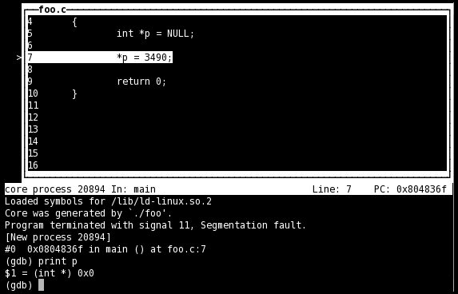

- Introduction
- 1. Command
- 2. Shared Libraries
-
3.
Linux Tools
- 3.1. Linux Basic
- 3.2. Linux工具進階
-
3.3.
工具參考篇
- 3.3.1. gdb 調試利器
- 3.3.2. ldd 查看程序依賴庫
- 3.3.3. lsof 一切皆文件
- 3.3.4. ps 進程查看器
- 3.3.5. pstack 跟蹤進程棧
- 3.3.6. strace 跟蹤進程中的系統調用
- 3.3.7. ipcs 查詢進程間通信狀態
- 3.3.8. top linux下的任務管理器
- 3.3.9. free 查詢可用內存
- 3.3.10. vmstat 監視內存使用情況
- 3.3.11. iostat 監視I/O子系統
- 3.3.12. sar 找出系統瓶頸的利器
- 3.3.13. readelf elf文件格式分析
- 3.3.14. objdump 二進制文件分析
- 3.3.15. nm 目標文件格式分析
- 3.3.16. size 查看程序內存映像大小
- 3.3.17. wget 文件下載
- 3.3.18. scp 跨機遠程拷貝
- 3.3.19. crontab 定時任務
- 3.3.20. trace-cmd
- 3.4. Doxygen
- 3.5. Jdbshell
- 4. Beej's Quick Guide to GDB
-
5.
Android note
- 5.1. android resource
- 5.2. 什麼時候用startService，什麼時候用bindService
- 5.3. android的消息處理機制（圖+源碼分析）——Looper,Handler,Message
- 5.4. Android中Handler Runnable與Thread的區別詳解
- 5.5. Android Service與Native Service
- 5.6. Handler, Message, Looper, MessageQueue
- 5.7. Android 各層中日誌打印功能的應用
- 5.8. Android指令和命令參數
- 5.9. Android中進程與進程、線程與線程之間如何通信
- 5.10. startService的創建過程
- 5.11. service組件-bindService源碼分析
- 5.12. [轉]Android 執行緒 - Thread 與 Handler
- 5.13. [轉] Android 執行緒 - Runnable 與 Handler
- 5.14. [轉] Android 非同步任務 - AsyncTask
- 5.15. [轉]Android.mk 組織結構
- 5.16. 如何下載編譯Android goldfish(Kernel)
- 5.17. 自己動手編譯android源碼
- 5.18. Android 核心使用 kgdb
- 6. Ubuntu
-
7.
QEMU
- 7.1. MY_QEMU
- 7.2. Qemu_KGDB_Ftrace
- 7.3. 5 分鐘 Linux 0.11 快速構建實驗環境
- 7.4. Debug Assembly with GDB for ARMv8 on QEMU
- 7.5. ARM體系結構--寄存器
- 7.6. Run Debian iso on QEMU ARMv8
- 7.7. QEMU ARM64 guide
- 7.8. QEMU install
- 7.9. 編譯 linux 0.11，並且使用 QEMU + GDB 調試 kernel ( Ubuntu 11.04, GCC 4.5.2)
- 7.10. How to Build A Custom Linux Kernel For Qemu (2015 Edition)
- 7.11. X86 Kernel
- 8. Linux Device Driver Programming
-
9.
fcamel
- 9.1. [轉]ld, ld.so 和 ldconfig 的行為
- 9.2. [轉]解決 undefined symbol / reference
- 9.3. [轉] 列出用到的 shared library
- 9.4. [轉]用 LD_PRELOAD 替換動態連結的函式庫
- 9.5. [轉] 用 strace 和 ltrace 找出用到的 system call 和 library call
- 9.6. [轉] 加速 linking time
- 9.7. [轉] 從 C 呼叫 C++ 函式的過程理解程式編譯、連結的原理
- 9.8. [轉] 對 C++ 的觀感
- 9.9. [轉]在 Linux 下開發 C/C++ 的新手指南
-
9.10.
[轉]瞭解 C/C++ 程式行為的技巧
- 9.10.1. 查 C/C++ symbol 定義的方法
- 9.10.2. 閱讀 C/C++ 原始碼的好幫手
- 9.10.3. 配合 c++filt 讀程式
- 9.10.4. 加速 gdb 載入 symbol 時間
- 9.10.5. 在 x86-64 上對 system call 使用 conditional break
- 9.10.6. 用 strace 找出 Ubuntu 如何提示未安裝的指令
- 9.10.7. 自行編譯含 debug symbol 的套件 (package)
- 9.10.8. gdb 顯示 STL container 的方法
- 9.10.9. 善用 strace、debugger 從執行期間找出問題根源
- 9.10.10. 用 python gdb 客製化 backtrace 的結果
- 9.11. 寫 linux daemon 的注意事項
- 9.12. signal 小知識
- 9.13. gold 和 GNU ld 行為差異造成的問題
- 10. ARM
-
11.
ARM emulation
- 11.1. Compiling Linux kernel for QEMU ARM emulator
- 11.2. Compiling Linux kernel 3.0 with Emdebian ARM toolchain
- 11.3. Compile Linux kernel 3.2 for ARM and emulate with QEMU
- 11.4. Busybox for ARM on QEMU
- 11.5. Linux NFS Root under QEMU ARM emulator
- 11.6. Trying Debian for ARM on QEMU
- 11.7. Debugging ARM programs inside QEMU
- 11.8. U-boot for ARM on QEMU
- 11.9. Booting Linux with U-Boot on QEMU ARM
- 11.10. Simplest bare metal program for ARM
- 11.11. Hello world for bare metal ARM using QEMU
- 11.12. Emulating ARM PL011 serial ports
- 11.13. ARM926 interrupts in QEMU
- 11.14. Using Ubuntu ARM cross-compiler for bare metal programming
- 11.15. Using Newlib in ARM bare metal programs
- 11.16. Using CodeSourcery bare metal toolchain for Cortex-M3
- 11.17. QEMU ARM semihosting
- 11.18. Simulating AT91 with Skyeye
-
12.
Linux Kernel
- 12.1. 我理解的邏輯地址、線性地址、物理地址和虛擬地址
- 12.2. 用ttyS0獲取dmesg信息
- 12.3. Buddy Algorithm
- 12.4. 分析oops的機器碼
- 12.5. oops調試
- 12.6. 可搶佔
- 12.7. 異或的用法
- 12.8. 定製編譯內核模塊的GCC參數
- 12.9. Linux 記憶體基礎
- 12.10. Linux內存管理之分頁機制
- 12.11. Linux虛擬內存概述
- 12.12. 程序的裝載和鏈接
- 12.13. IA32CPU內存管理機制
- 12.14. Linux內存管理之分段機制
- 12.15. 邏輯地址，線性地址及物理地址的區別
- 12.16. 分段機制和分頁機制
- 12.17. 段選擇器 段描述符 段描述符表 線性地址形成
- 12.18. Linux 內核的編譯系統
- 12.19. 如何編譯linux kernel
- 12.20. Linked List in Linux Kernel
- 12.21. Linux Kernel: 強大又好用的list_head結構
- 13. Linux Driver
- 14. OS
- 15. Linux System
-
16.
Assembly
- 16.1. myAssembly
-
16.2.
Linux 平臺學X86組合語言
- 16.2.1. 現代計算機結構組成與工作過程
- 16.2.2. 處理器指令碼及IA-32平臺瞭解
- 16.2.3. 相關開發工具
- 16.2.4. 從“hello world！”開始
- 16.2.5. 使用gdb調試彙編程序
- 16.2.6. 數據的傳送
- 16.2.7. 堆棧的使用
- 16.2.8. 條件跳轉
- 16.2.9. 循環指令
- 16.2.10. 整數運算
- 16.2.11. 字符串的傳送
- 16.2.12. 字符串的存儲與加載
- 16.2.13. 字符串的比較與搜索
- 16.2.14. 函數的使用
- 16.2.15. 使用命令行參數
- 16.2.16. 在彙編語言中調用C庫函數
- 16.2.17. 在彙編中使用linux系統調用
- 16.2.18. 內聯彙編
- 16.2.19. C語言中調用匯編函數
- 16.2.20. 彙編庫的使用（結）
- 16.3. [轉]如何在 Linux 下使用 GNU AS 撰寫組合語言
- 16.4. 在 Linux 下使用 GNU AS 編寫組合語言 - 使用 gdb 進行除錯
- 16.5. linux反彙編旁門左道小技巧一則
- 16.6. gas學習 by Jian Lee
- 16.7. 閱讀assembly code
- 17. Toolchain
- 18. GDB
- 19. Linux內核分析雲課堂學習筆記
- 20. GNU make
- 21. C++
-
22.
[轉]國王的耳朵是驢耳朵
- 22.1. Linker script初探 - GNU linker ld手冊略讀
- 22.2. GNU ld初探
- 22.3. 系統函式庫的debug 資訊放在那邊？
- 22.4. Nm 的欄位說明
- 22.5. Objdump -t 的欄位說明
- 22.6. C語言在Linux下組裝經驗分享
- 22.7. C語言archive 明明有symbol卻link時出現unsolved Symbol錯誤
- 22.8. Linux 檔案的hole
- 22.9. Linux下面的C語言使用getopt Parse Command Line參數
- 22.10. Hello World
- 22.11. Using as 手冊筆記
- 22.12. Hello Linux ARM 組合語言
- 22.13. Linux中誰來呼叫C語言中的main?
- 22.14. 談談.git 目錄
- 22.15. Linux中使用C語言載入data object 檔案資料
- 22.16. Linux下面快速搜尋PDF的方式
- 22.17. Rtenv的linker Script解釋
- 22.18. GNU LD 手冊略讀
- 22.19. GNU: The C Preprocessor 導讀
- 22.20. from-source-to-binary-how-gnu-toolchain-works
-
23.
Shell
-
23.1.
shell十三問
- 23.1.1. 何為shell
- 23.1.2. shell prompt(PS1)與Carriage Return(CR)關係
- 23.1.3. 別人echo、你也echo，是問echo知多少？
- 23.1.4. ""(雙引號)與''(單引號)差在哪？
- 23.1.5. 問var=value 在export前後的差在哪?
- 23.1.6. exec跟source差在哪？
- 23.1.7. ()與{}差在哪？
- 23.1.8. $(())與$()還有${}差在哪？
- 23.1.9. $@與$*差在哪？
- 23.1.10. && 與 || 差在哪？
- 23.1.11. >與< 差在哪？
- 23.1.12. 你要if還是case呢？
- 23.1.13. for what？ while與until差在哪？
- 23.2. MY_script
- 23.3. Bash的陷阱
-
23.1.
shell十三問
-
24.
simplelinux
- 24.1. 照妖鏡和火眼金睛
- 24.2. 局部變量
- 24.3. 全局變量
- 24.4. 值傳遞
- 24.5. 數組與指針
- 24.6. 字符串
- 24.7. 結構體
- 24.8. 奇怪的宏
- 24.9. 內存對齊
- 24.10. 函數幀
- 24.11. 函數幀應用一：誰調用了main？
- 24.12. 函數幀應用二：所有遞歸都可以變循環
- 24.13. 未初始化全局變量
- 24.14. 進程內存分佈
- 24.15. 編譯優化
- 24.16. static變量 及 作用域控制
- 24.17. 變量名、函數名
- 24.18. 函數指針
- 24.19. 可變參數
- 24.20. C語言的棧是靜態的
- 24.21. 內聯彙編
- 24.22. 彙編實現的動態棧
- 24.23. linux0.01進程時間片的消耗和再生
- 24.24. linux2.6.XX進程切換和時間片再生
- 25. OpenSource
- 26. wirelessr
- Published with GitBook
Beej's Quick Guide to GDB
Release 2 (2009 Jun 14) This is a very quick-and-dirty guide meant to get you started with the GNU Debugger, gdb, from the command line in a terminal. Often times gdb is run via an IDE, but many people out there shun IDEs for a variety of reasons, and this tutorial is for you!
Again, this is only a getting-started guide. There's much much MUCH more to learn about what the debugger does than is written in these few short paragraphs. Check out your "man" pages or the online resources listed below for more info.
This tutorial is meant to be read in order, up to, but not including, the "Misc" section.
Contents
- Compiling to use a debugger
- More Information
- License
- Starting gdb and getting to main()
- Breakpoints
- Stepping Around
- Examining Variables
- Misc Stuff
- Stack Manipulation
- Additional Stepping Methods
- Jumping to an Arbitrary Section of Code
- Changing Variables and Values at Runtime
- Hardware Watchpoints
- Attach to a Running Process
- Using Coredumps for Postmortem Analysis
- Window Functions
- Display Registers and Assembly
- Writing a Front-End
- Quick Reference Cheat Sheet
Compiling
You have to tell your compiler to compile your code with symbolic debugging information included. Here's how to do it with gcc, with the -g switch:
$ gcc -g hello.c -o hello
$ g++ -g hello.cpp -o hello
Once you've done that, you should be able to view program listings in the debugger.
More Information
Check out the Official GDB Documentation for more information than you can shake a stick at!
Also, a good GNU GDB front-end is DDD, the DataDisplayDebugger.
License
Creative Commons License Beej's Quick Guide to GDB by Brian "Beej Jorgensen" Hall is licensed under a Creative Commons Attribution-Noncommercial-No Derivative Works 3.0 United States License.
Starting The Debugger
First things first: you can enter help at any gdb prompt and get more information. Also, you can enter quit to quit the debugger. Finally, just hitting RETURN will repeat the last command entered. Now let's fire it up!
There are several ways to start the debugger (e.g. if you were an IDE you might start it with a particular mode that's not so human-friendly) but I'll mention two of them here: vanilla console mode and curses GUI mode. The GUI is better, but let's quickly cover the simple one, and launch a program called hello in the debugger:
$ gdb hello
GNU gdb 6.8
Copyright (C) 2008 Free Software Foundation, Inc.
License GPLv3+: GNU GPL version 3 or later <http://gnu.org/licenses/gpl.html>
This is free software: you are free to change and redistribute it.
There is NO WARRANTY, to the extent permitted by law. Type "show copying"
and "show warranty" for details.
This GDB was configured as "i486-slackware-linux"...
(gdb) run
Starting program: /home/beej/hello
Hello, world!
Program exited normally.
(gdb)
The last line is the gdb prompt, waiting for you to tell it what to do. Type r or run to run the program. (gdb allows you to abbreviate commands until they become ambiguous.)
To start in neato and highly-recommended GUI mode, start the debugger with gdb -tui. (For many of the examples, below, I show the output of gdb's dumb terminal mode, but in real life I use TUI mode exclusively.)
And here is a screenshot of what you'll see, approximately:

All the normal gdb commands will work in GUI mode, and additionally the arrow keys and pgup/pgdown keys will scroll the source window (when it has focus, which it does by default). Also, you can change which file or function is displayed in the source window by giving the command list with a location as an argument, for example, "list hello.c:5 to bring up the file hello.c on line 5. (See "Breakpoints", below, for sample locations—the same locations that work with breakpoints will work with the list command.) As a side note, list also works in dumb terminal mode.
Now, notice that we passed the name of the executable on the command line. Another option you have is to just start gdb with nothing else on the command line, then give it the command file hello, and that will cause the executable "hello" to be loaded up.
Command line arguments! What if you have to get something into argv in your program? Pass them as arguments to the run command when you start execution:
$ gdb hello
GNU gdb 6.8
Copyright (C) 2008 Free Software Foundation, Inc.
License GPLv3+: GNU GPL version 3 or later <http://gnu.org/licenses/gpl.html>
This is free software: you are free to change and redistribute it.
There is NO WARRANTY, to the extent permitted by law. Type "show copying"
and "show warranty" for details.
This GDB was configured as "i486-slackware-linux"...
(gdb) run arg1 arg2
Starting program: /home/beej/hello arg1 arg2
Hello, world!
Program exited normally.
(gdb)
Notice where it says "Starting Program", above, it shows the arguments "arg1" and "arg2" being passed to "hello".
Breakpoints
Just starting the debugger to run the program straight through isn't very useful—we need to stop execution and get into stepping mode.
First, before you issue the run command, you need to set a breakpoint someplace you'd like to stop. You use the break or b command, and specify a location, which can be a function name, a line number, or a source file and line number. These are examples of locations, which are used by various other commands as well as break:
break main Break at the beginning of the main() function
break 5 Break at line 5 of the current file
break hello.c:5 Break at line 5 of hello.c
So for this test, let's set a breakpoint at main(), and start the program:
$ gdb hello
GNU gdb 6.8
Copyright (C) 2008 Free Software Foundation, Inc.
License GPLv3+: GNU GPL version 3 or later <http://gnu.org/licenses/gpl.html>
This is free software: you are free to change and redistribute it.
There is NO WARRANTY, to the extent permitted by law. Type "show copying"
and "show warranty" for details.
This GDB was configured as "i486-slackware-linux"...
(gdb) b main
Breakpoint 1 at 0x8048395: file hello.c, line 5.
(gdb) r
Starting program: /home/beej/hello
Breakpoint 1, main () at hello.c:5
5 printf("Hello, world!\n");
(gdb)
As you see, we've arrived at main() and execution has stopped at the breakpoint we set there. If you're running in dumb terminal mode, gdb will print the line it will execute next. If you're running in cool GUI mode, the line it will execute next will be highlighted in the source window.
To list the current breakpoints, use the info command, like so: "info breakpoints" (or the shorter "i b"):
(gdb) b main
Breakpoint 1 at 0x8048395: file hello.c, line 5.
(gdb) i b
Num Type Disp Enb Address What
1 breakpoint keep y 0x08048395 in main at hello.c:5
To clear a breakpoint, use the clear command with the breakpoint location. You can also clear a breakpoint by number with the delete command.
Additionally, you can enable or disable breakpoints, though these two commands take a breakpoint number as an argument, not a location! The enabled/disabled status of a breakpoint is visible under the "Enb" column in the breakpoint listing.
(gdb) i b
Num Type Disp Enb Address What
1 breakpoint keep y 0x08048395 in main at hello.c:5
(gdb) disable 1
(gdb) i b
Num Type Disp Enb Address What
1 breakpoint keep n 0x08048395 in main at hello.c:5
(gdb) clear main
Deleted breakpoint 1
(gdb) i b
No breakpoints or watchpoints.
Stepping Around
Once execution stops at a breakpoint, you can tell the debugger to do a few things. Let's start with the next command (or n). This command moves you to the next statement in the current function (or returns to the function's caller if you've stepped off the end of the function.) Here's a sample run; remember that gdb is printing the line it will execute next just before the "(gdb)" prompt. Also notice that when we run next on the printf() line, we see the output appear.
(gdb) b main
Breakpoint 1 at 0x8048395: file hello.c, line 5.
(gdb) r
Starting program: /home/beej/hello
Breakpoint 1, main () at hello.c:5
5 printf("Hello, world!\n");
(gdb) next
Hello, world!
7 return 0;
(gdb) next
8 }
(gdb) next
0xb7d6c6a5 in __libc_start_main () from /lib/libc.so.6
(gdb) next
Single stepping until exit from function __libc_start_main,
which has no line number information.
Program exited normally.
(gdb)
(That weird stuff at the end about __libc_start_main() shows you that there was another function that called your main() function! It wasn't compiled with debugging information so we can't see the source, but we can still step through it—which we do—and the program exits normally.)
Now, notice that next steps over function calls. This doesn't mean that function doesn't get called; it means that next will execute the function until it's done, and then return you to the next line in your current function.
What if you have a function you want to step into from your current function, and trace through that function line-by-line? Use the step (or s) command to do this. It works just like next, except it steps into functions.
Let's say you're tired of single stepping, and just want the program to run again. Use the continue (or c) command to continue execution.
What if the program is running but you forgot to set breakpoints? You can hit CTRL-C and that'll stop the program wherever it happens to be and return you to a "(gdb)" prompt. At that point, you could set up a proper breakpoint somewhere and continue to that breakpoint.
One final shortcut is that just hitting RETURN will repeat the last command entered; this will save you typing next over and over again.
Examining Variables
If you have some variables you wish to inspect over the course of the run, you can display them, but only if the variable is currently in scope. Each time you step the code, the value of the variable will be displayed (if it's in scope).
(The following output is missing source code output between lines for clarity—it's what you'd see in GUI mode. Imagine you're seeing the highlight bar bouncing around the source code while you're running this:)
(gdb) b main
Breakpoint 1 at 0x8048365: file hello.c, line 5.
(gdb) r
Starting program: /home/beej/hello
Breakpoint 1, main () at hello.c:5
(gdb) disp i
1: i = -1207447872
(gdb) next
1: i = 1
(gdb) next
1: i = 1
(gdb) next
1: i = 2
(gdb) next
1: i = 2
(gdb) next
1: i = 4
(gdb) next
1: i = 4
(gdb) next
1: i = 4
(gdb)
The number to the left of "i", above, is the display number of the variable. Use this number to undisplay the variable. If you forget the display numbers, you can type info display to get them:
(gdb) b main
Breakpoint 1 at 0x8048365: file hello.c, line 5.
(gdb) r
Starting program: /home/beej/hello
Breakpoint 1, main () at hello.c:5
(gdb) display i
1: i = -1207447872
(gdb) info display
Auto-display expressions now in effect:
Num Enb Expression
1: y i
(gdb) undisplay 1
(gdb)
If you just want to one-off know the value of a variable, you can print it. Here we see the value of "i" is 40:
(gdb) print i
$1 = 40
(gdb)
(The "$" with the number after it means something, but it's not important for beginners.)
There's also a handy printf command that you can use to better format your output if you want to:
(gdb) printf "%d\n", i
40
(gdb) printf "%08X\n", i
00000028
(gdb)
Misc Stuff
This is stuff that doesn't really fit in the earlier sections, but it fun enough to list somewhere.
Stack Manipulation
The command backtrace (or bt) will show you the current function call stack, with the current function at the top, and the callers in order beneath it:
(gdb) backtrace
#0 subsubfunction () at hello.c:5
#1 0x080483a7 in subfunction () at hello.c:10
#2 0x080483cf in main () at hello.c:16
(gdb)
Type help stack for more info on what you can do with this.
Additional Stepping Methods To exit the current function and return to the calling function, use the finish command.
To step for a single assembly instruction, use the stepi command.
To continue to a specific location, use the advance command, specifying a location like those shown in the "Breakpoints" section, above. Here's an example which advances from the current location until the function subsubfunction() is called:
Breakpoint 1, main () at hello.c:15
15 printf("Hello, world!\n");
(gdb) advance subsubfunction
Hello, world!
subsubfunction () at hello.c:5
5 printf("Deepest!\n");
(gdb)
advance is just shorthand for "continue to this temporary breakpoint."
Jumping to an Arbitrary Section of Code
The jump command works exactly like continue, except it takes a location to jump to as an argument. (See the the "Breakpoints" section, above, for more information on locations.)
If you need to stop at the jump destination, set a breakpoint there first.
Changing Variables and Values at Runtime
You can use the set variable command with an expression to evaluate, and this allows you to change the value of a variable during the run. You can also shorthand this by just using set with a parenthesized expression after it:
Breakpoint 1, main () at hello.c:15
15 int i = 10;
(gdb) print i
$1 = -1208234304
(gdb) set (i = 20)
(gdb) print i
$2 = 20
(gdb) set variable i = 40
(gdb) print i
$3 = 40
(gdb)
This, along with the jump command, can help you repeat sections of code without restarting the program.
Hardware Watchpoints Hardware watchpoints are special breakpoints that will trigger whenever an expression changes. Often you just want to know when a variable changes (is written to), and for that you can use the watch command:
Breakpoint 1, main () at hello.c:5
5 int i = 1;
(gdb) watch i
Hardware watchpoint 2: i
(gdb) continue
Continuing.
Hardware watchpoint 2: i
Old value = -1208361280
New value = 2
main () at hello.c:7
7 while (i < 100) {
(gdb) continue
Continuing.
Hardware watchpoint 2: i
Old value = 2
New value = 3
main () at hello.c:7
7 while (i < 100) {
(gdb)
Note that watch takes an expression as an argument, so you can put a variable name in there, or something more complex like *(p+5) or a[15]. I've even tried it with conditional expressions like i > 10, but have had mixed results.
You can get a list of watch points with info break or info watch, and you can delete them by number with the delete command.
Finally, you can use rwatch to detect when a variable is read, and you can use awatch to detect when a variable is either read or written.
Attach to a Running Process
If your program is already going and you want to stop it and debug, first you'll need the process ID (PID), which will be a number. (Get it from Unix's ps command.) Then you'll use the attach command with the PID to attach to (and break) the running program.
For this, you can just start gdb with no arguments.
In the following complete run, you'll notice a few things. First I attach to the running process, and it tells me it's in some function deep down called __nanosleep_nocancel(), which isn't too surprising since I called sleep() in my code. Indeed, asking for a backtrace shows exactly this call stack. So I say finish a couple times to get back up to main().
$ gdb
GNU gdb 6.8
Copyright (C) 2008 Free Software Foundation, Inc.
License GPLv3+: GNU GPL version 3 or later <http://gnu.org/licenses/gpl.html>
This is free software: you are free to change and redistribute it.
There is NO WARRANTY, to the extent permitted by law. Type "show copying"
and "show warranty" for details.
This GDB was configured as "i486-slackware-linux".
(gdb) attach 3490
Attaching to process 3490
Reading symbols from /home/beej/hello...done.
Reading symbols from /lib/libsafe.so.2...done.
Loaded symbols for /lib/libsafe.so.2
Reading symbols from /lib/libc.so.6...done.
Loaded symbols for /lib/libc.so.6
Reading symbols from /lib/libdl.so.2...done.
Loaded symbols for /lib/libdl.so.2
Reading symbols from /lib/ld-linux.so.2...done.
Loaded symbols for /lib/ld-linux.so.2
0xb7eab21b in __nanosleep_nocancel () from /lib/libc.so.6
(gdb) backtrace
#0 0xb7eab21b in __nanosleep_nocancel () from /lib/libc.so.6
#1 0xb7eab05f in sleep () from /lib/libc.so.6
#2 0x080483ab in main () at hello.c:10
(gdb) finish
Run till exit from #0 0xb7eab21b in __nanosleep_nocancel ()
from /lib/libc.so.6
0xb7eab05f in sleep () from /lib/libc.so.6
(gdb) finish
Run till exit from #0 0xb7eab05f in sleep () from /lib/libc.so.6
0x080483ab in main () at hello.c:10
10 sleep(1);
(gdb) list
5 {
6 int i = 1;
7
8 while (i < 60) {
9 i++;
10 sleep(1);
11 }
12
13 return 0;
14 }
(gdb) print i
$1 = 19
(gdb) quit
The program is running. Quit anyway (and detach it)? (y or n) y
Detaching from program: /home/beej/hello, process 3490
Notice that when I get back to main(), I print the value of i and it's 19—because in this case the program has been running for 19 seconds, and i gets incremented once per second.
Once we've quit the debugger and detached from the program, the program returns to running normally.
Mix this with set variable, above, and you've got some power!
Using Coredumps for Postmortem Analysis
Let's say you build and run a program, and it dumps core on you for some reason or another:
$ cc -g -o foo foo.c
$ ./foo
Segmentation fault (core dumped)
This means that a core file (with a memory snapshot from the time of the crash) has been created with the name "core". If you're not getting a core file (that is, it only says "Segmentation fault" and no core file is created), you might have your ulimit set too low; try typing ulimit -c unlimited at your shell prompt.
You can fire up gdb with the -c option to specify a core file:
$ gdb -tui -c core foo
And, if in TUI mode, you'll be greeted with a screen of information, telling you why the program exited ("signal 11, Segmentation fault"), and the highlight will be on the offending line. (In dumb terminal mode, the offending line is printed out.)
In this example, I print the variable that's causing the problem. Indeed it is NULL: 
Even if you don't have all the source code, it's often useful to get a backtrace from the point the program crashed.
Window Functions
In TUI mode, you can get a list of existing windows with the info win command. You can then change which window has focus with the focus (or fs) command. focus takes either a window name, or "prev" or "next" as an argument. Valid window names are "SRC" (source window), "CMD" (command window), "REGS" (registers window), and "ASM" (assembly window). See the next section for how to use these other windows.
Note that when the SRC window has focus, the arrow keys will move the source code, but when the CMD window has focus, the arrow keys will select the previous and next commands in the command history. (For the record, the commands to move the SRC window single lines and single pages are +, -, <, and >.)
(gdb) info win
SRC (36 lines) <has focus>
CMD (18 lines)
(gdb) fs next
Focus set to CMD window.
(gdb) info win
SRC (36 lines)
CMD (18 lines) <has focus>
(gdb) fs SRC
Focus set to SRC window.
(gdb)
(Window names are case in-sensitive.)
The winheight (or wh) command sets the height of a particular window, but I've had bad luck with this working well.
Display Registers and Assembly
In TUI mode, the layout command controls which windows you see. Additionally, the tui reg allows control of the register window, and will open it if it's not already open.
The commands are:
layout src Standard layout—source on top, command window on the bottom
layout asm Just like the "src" layout, except it's an assembly window on top
layout split Three windows: source on top, assembly in the middle, and command at the bottom
layout reg Opens the register window on top of either source or assembly, whichever was opened last
tui reg general Show the general registers
tui reg float Show the floating point registers
tui reg system Show the "system" registers
tui reg next Show the next page of registers—this is important because there might be
pages of registers that aren't in the "general", "float", or "system" sets
Here's a nifty screenshot to whet your appetite, showing source and assembly in "split" mode:

Assembly code comes in two flavors on Intel machines: Intel and AT&T. You can set which one appears in the disassembly window with set disassembly-flavor. Valid values are "intel" and "att". If you already have the assembly window open, you'll have to close it and reopen it (layout src followed by layout split, for example.)
To display registers in dumb terminal mode, type info registers for the integer registers, or info all-registers for everything.
Writing a Front-End
You're thinking, "Wow, this is pretty cool, but I could write a killer front-end for this thing that worked so much better! How do I do it?"
GDB supports what it calls the "machine interface interpreter", or GDB/MI. The interpreter is selected on the gdb command line with the --interpreter switch.
Basically you'll launch gdb and read commands and results to and from it (probably using pipes). Pretty straightforward.
See the GDB documentation for all the details.
Quick Reference
Command parameters are in italics. Optional parameters are in square brackets. All commands can be abbreviated until they become ambiguous.
This list is very very incomplete, and only shows things talked about in this tutorial!
Help Commands
help command Get help on a certain command
apropos keyword Search help for a particular keyword
Starting and Quitting
gdb [-tui] [-c core] [exename] (Unix Command) Start gdb on an executable or standalone; specify "-tui" to start the TUI GUI; specify "-c" with a corefile name to see where a crash occurred
run [arg1] [arg2] [...] Run the currently loaded program with the given command line arguments
quit Exit the debugger
file exename Load an executable file by name
Breakpoints and Watchpoints
break location Set a breakpoint at a location, line number, or file (e.g. "main", "5", or "hello.c:23")
watch expression Break when a variable is written to
rwatch expression Break when a variable is read from
awatch expression Break when a variable is written to or read from
info break Display breakpoint and watchpoint information and numbers
info watch Same as info break
clear location Clear a breakpoint from a location
delete num Delete a breakpoint or watchpoint by number
Stepping and Running
next Run to the next line of this function
step Step into the function on this line, if possible
stepi Step a single assembly instruction
continue Keep running from here
CTRL-C Stop running, wherever you are
finish Run until the end of the current function
advance location Advance to a location, line number, or file (e.g. "somefunction", "5", or "hello.c:23")
jump location Just like continue, except jump to a particular location first.
Examining and Modifying Variables
display expression Display the value of a variable or expression every step of the program—the expression must make sense in the current scope
info display Show a list of expressions currently being displayed and their numbers
undisplay num Stop showing an expression identified by its number (see info display)
print expression Print the value of a variable or expression
printf formatstr expressionlist Do some formatted output with printf() e.g. printf "i = %d, p = %s\n", i, p
set variable expression Set a variable to value, e.g. set variable x=20
set (expression) Works like set variable
Window Commands
info win Shows current window info
focus winname Set focus to a particular window bby name ("SRC", "CMD", "ASM", or "REG") or by position ("next" or "prev")
fs Alias for focus
layout type Set the window layout ("src", "asm", "split", or "reg")
tui reg type Set the register window layout ("general", "float", "system", or "next")
winheight val Set the window height (either an absolute value, or a relative value prefaced with "+" or "-")
wh Alias for winheight
set disassembly-flavor flavor Set the look-and-feel of the disassembly. On Intel machines, valid flavors are intel and att
Misc Commands
RETURN Hit RETURN to repeat the last command
backtrace Show the current stack
bt Alias for backtrace
attach pid Attach to an already-running process by its PID
info registers Dump integer registers to screen
info all-registers Dump all registers to screen